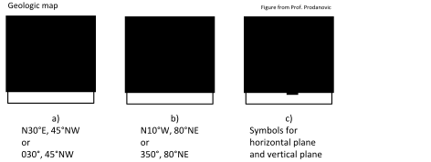
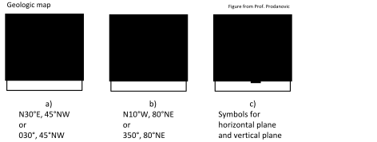

Next: Kirsch solution components Up: Kirsch solution for stresses Previous: Kirsch solution for stresses Contents
The cylindrical symmetry of a wellbore prompts the utilization of a cylindrical coordinate system rather than a rectangular cartesian coordinate system.
The volume element of stresses in cylindrical coordinates is shown in Fig. 6.3.
The distance  is measured from the axis of the wellbore.
The angle  is measured with respect to a predefined plane.
is measured from the axis of the wellbore.
The angle  is measured with respect to a predefined plane.
The normal stresses are: radial stress
 , tangential or hoop stress
, tangential or hoop stress
 , axial stress
, axial stress
 , and shear stresses
, and shear stresses
 ,
,
 , and
, and
 .
.